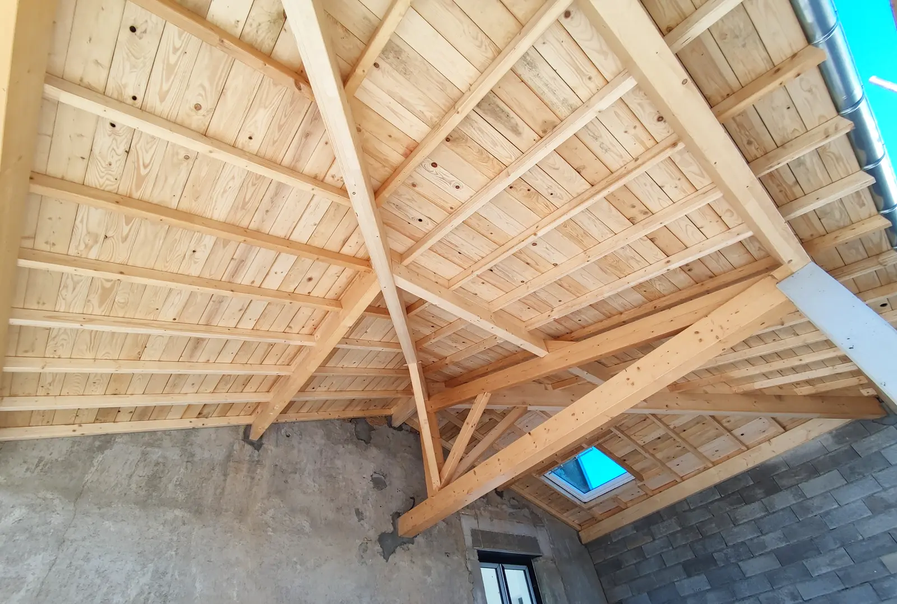
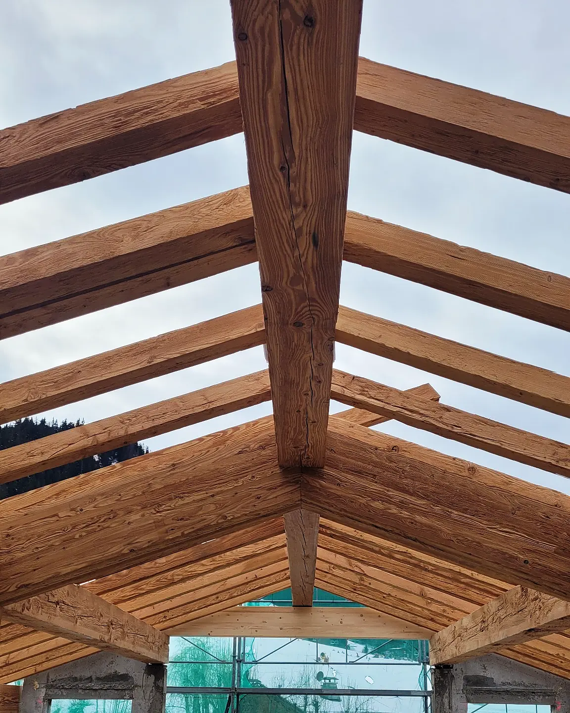
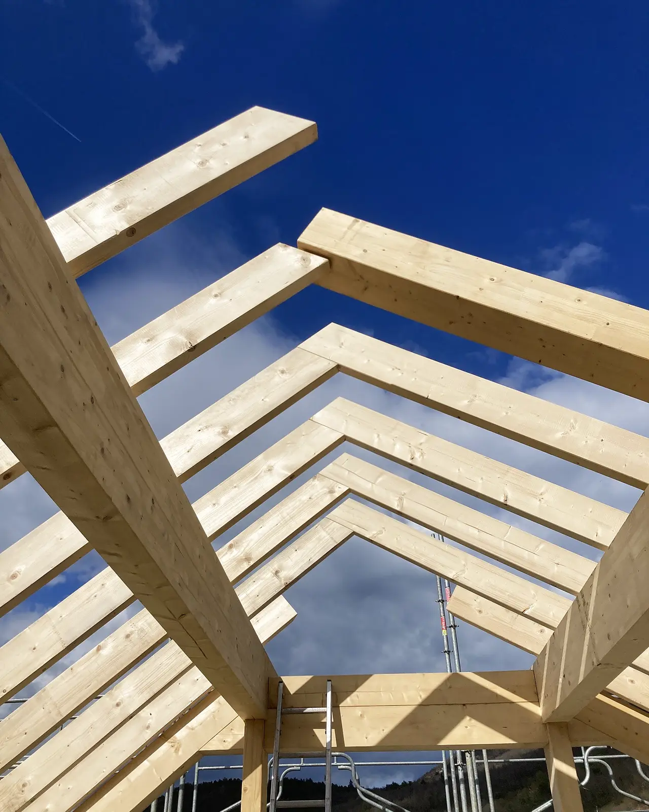
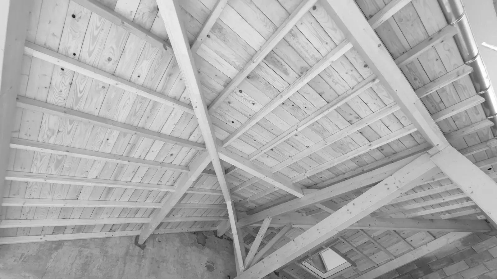

Douglas
Résineux robuste cultivé en France, naturellement durable. Idéal pour la charpente, l'ossature et le bardage.

Une charpente bien conçue traverse les générations. Nous concevons, taillons et levons des charpentes neuves en bois massif, avec le soin et la précision que demande ce métier.
Fermes, pannes, chevrons, entraits : chaque pièce est dessinée pour votre maison, puis taillée et ajustée avec méthode. Les assemblages sont réalisés dans les règles de l'art, pour une charpente solide, qu'elle reste apparente ou qu'elle soit cachée sous les combles.
Nous travaillons de façon méticuleuse, du relevé des mesures jusqu'au levage, et restons votre seul interlocuteur du début à la fin du chantier.



Pour une charpente, nous privilégions les essences locales, Douglas et chêne en tête, et le bois de réemploi chaque fois que le projet le permet.
Résineux robuste cultivé en France, naturellement durable. Idéal pour la charpente, l'ossature et le bardage.
Le bois noble de la charpente traditionnelle : dense, solide, superbe en poutres apparentes.
Résistant aux intempéries sans traitement chimique : bardages, terrasses, ouvrages extérieurs.
Bois clair, dense et élégant, apprécié notamment pour les terrasses.
Dès que c'est possible, nous donnons une seconde vie à des bois de qualité : moins de déchets, et des pièces qui ont une histoire.
Une charpente industrielle est faite de petites pièces (fermettes) assemblées par des connecteurs métalliques, qui encombrent les combles. Une charpente traditionnelle, en pièces de bois massif, libère l'espace sous la toiture : les combles restent aménageables et la charpente peut rester apparente.
Le Douglas et le chêne sont deux excellents choix locaux. Nous vous conseillons l'essence la mieux adaptée à votre projet, à l'aspect souhaité et à votre budget, et proposons du bois de réemploi lorsque c'est possible.
Oui. Mirabois Construction exerce au sein de la coopérative Alter-Bâtir : les travaux sont couverts par son assurance décennale auprès de SMA BTP.
Nous venons voir votre maison, écoutons votre projet, puis vous remettons un devis détaillé, poste par poste.